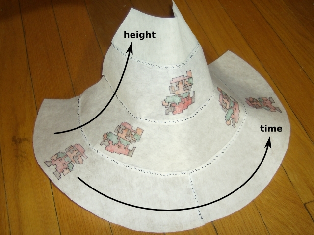

The data in this map are provided directly, without tiling. It's just an image in hyperbolic space.
Zooming has been disabled and the rotationMode is "compass", meaning that the "up" direction is maintained as you scroll.
See the code in docs/jumping-man.html.
In the Dungeon Man demo, we saw the consequences of intrinsic curvature in a 2-dimensional space: horizontal and vertical dimensions connected in non-trivial ways. In this demo, the horizontal dimension represents time and the vertical dimension is altitude (height above the ground). At first, the Jumping Man is standing on the ground, then he jumps at time = 0 seconds, he remains in free-fall until time = 0.8 seconds, and he ends up standing on the ground again until the end of the time-sequence. Gray lines indicate moments in time.
Since one of the dimensions is time, we are looking at space-time curvature.
The theory of general relativity describes gravity as a consequence of space-time curvature instead of long-distance forces. The idea is that objects only ever take their shortest paths through space-time when they are in free-fall—that is, not being pushed on by the ground. Falling is the natural, undisturbed motion through curved space-time, and a jump intersects the ground at its start and finish because the ground is effectively racing up to meet the Jumping Man while he's drifting through the air. In the widget above, you can drag the camera to a place in which the Jumping Man's trajectory is straight as long as he's airborne. There is no viewpoint in which his trajectory is straight while standing on the ground.
Here is the same idea in curved cloth:

Standing on the ground is the long path from start to finish, and jumping takes a shortcut through higher altitudes, where there there is less time to traverse. It is empirically true that clocks at high altitudes run at a different rates than clocks on the ground—this is the same effect as gravity itself.
(Note: this demo does not reproduce general relativity in any quantitative way. The purpose is just to show how curved space-time can make a difference in the shape of a free-fall trajectory relative to ground.)